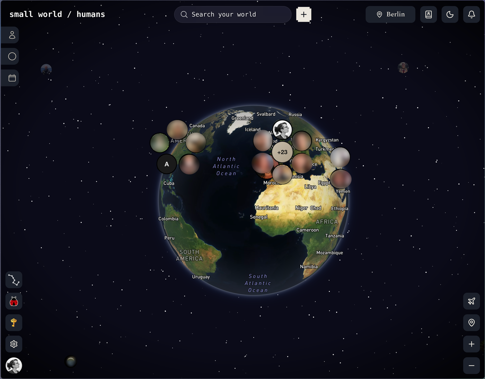

01Small World
Past chapterA cross-platform product I helped build as part of a small team. The full walkthrough is passcode-gated — the file is encrypted, not just hidden.
- MVP
- —
- Stack
- React · Capacitor · Rust · TS
- Role
- Developer in a team
- Link
- Private
How I built it with AI Stub — optional. Fill in or leave gated.